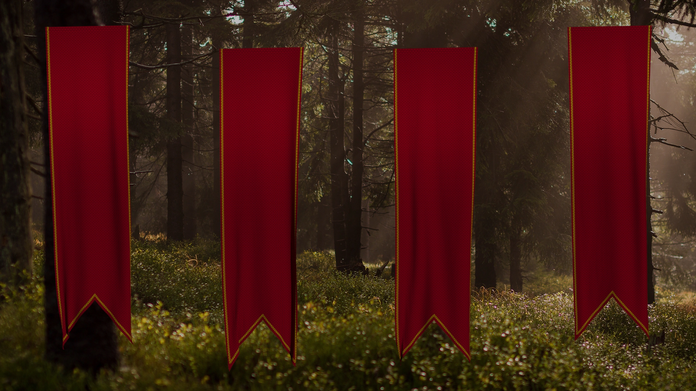

<app-navbar [mainPage] = 'false'></app-navbar>
<div class="nosmallscreen">EXPERIMENTAL - NO small screen support yet! Look NOT final!</div>
<section id="points">
    <div *ngFor="let layoutType of layoutTypes">
        <div *ngIf="layoutType === this.currentLayout">
            <section class="content{{layoutType}}">
                <video autoplay muted loop>
                    <source src="../../../assets/videos/points_bg/{{layoutType}}/first.mp4" type="video/mp4">
                </video>
                <video autoplay muted loop>
                    <source src="../../../assets/videos/points_bg/{{layoutType}}/second.mp4" type="video/mp4">
                </video>
                <video autoplay muted loop>
                    <source src="../../../assets/videos/points_bg/{{layoutType}}/third.mp4" type="video/mp4">
                </video>
                <video autoplay muted loop>
                    <source src="../../../assets/videos/points_bg/{{layoutType}}/fourth.mp4" type="video/mp4">
                </video>
                
            </section>
        </div>
    </div>
</section>